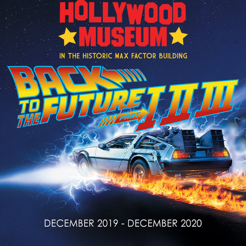

Acortando distancias en estos momentos tan dificiles
Los viajeros del tiempo de la gran pantalla vuelven a juntars, pero esta vez en formato straming! Acompañados del famoso Josh Gad estaran realizando una transmision especial para quienes quieran volver a vivir las historias de como se rodo una de las trilogias mas taquilleras de todos los tiempos

A fines de este año se estará presentando por primera vez en la historia el Musical de esta gran trilogia
Adaptando esta icónica historia para el escenario están los creadores de la película Bob Gale ( trilogía Regreso al futuro ) y Robert Zemeckis ( Forrest Gump ). La producción presenta música original de los ganadores de varios Grammy Alan Silvestri ( Avengers: Endgame ) y Glen Ballard (El hombre en el espejo de Michael Jackson ) , junto con canciones exitosas de la película como The Power of Love, Johnny B. Goode, Earth Angel and Back in Time.

No hay tiempo como el futuro: un optimista considera la mortalidad
La vida de nuestro querido Marty McFly como nunca antes la habias visto, narrada por quien lo represento en carne viva el gran Michael J.Fox. En donde tambien cuenta como nacio la Fundación Michael J. Fox para la Investigación del Parkinson, (que ahora es la organización líder en Parkinson en el mundo) Y como logró ponerse en el papel de autor y escribio los tres libros más vendidos del New York Times : Lucky Man , Always Looking Up y A Funny Thing Happened on the Way to the Future

TRILOGÍA DE REGRESO AL FUTURO: LA EXPOSICIÓN
La exhibición, constará de tres secciones populares: Hill Valley de 1955, Hill Valley de 1985 y Hill Valley de 1885. Que rendiran homenaje a la franquicia cinematográfica. Constara con la presentacion de Rob Klein, uno de los principales coleccionistas de Back to the Future quien presentara durante la exhibición la túnica de Christopher Lloyd ("Doc Brown") de las Partes I y III, el traje occidental de Michael J. Fox ("Marty McFly") de la Parte III, hasta el vestido de Mary Steenburgen ( "Clara Clayton") y su telescopio de la Parte III, Ademas de la icónica Máquina del tiempo Hero DeLorean en la tercera película, con más de 350 artefactos originales que se combinan en pantalla